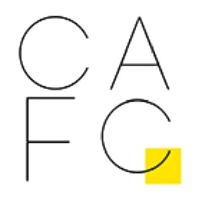

Ages of Beauty
Volunteer writing project
A volunteer writing project with the Creative Arts Foundation of Canada, this initiative involves publishing an illustrated book celebrating the memories and life stories of Montreal’s elders, to preserve their personal histories for future generations.